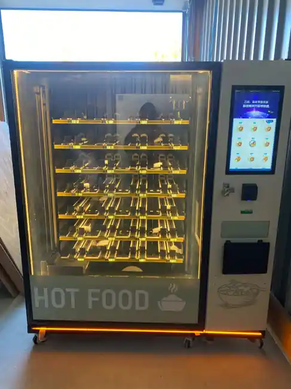
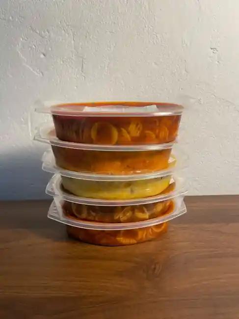

Hot at the touch of a button
The built-in microwave heats your curry before the machine hands it over, even on the night shift.
Workplace meals · Berlin & Brandenburg
The LECKERDING™ food vending machine heats the chosen meal on the spot. A full meal for teams whose shifts run beyond kitchen hours.

BEHIND THE MACHINE
A demonstration of the machine: refrigerated product shelves, cashless operation and integrated heating in one compact solution.
28 seconds from a test run · no sound.
Open the video directly ↗Enquire about your location ↗LECKERDING™
The built-in microwave heats your curry before the machine hands it over, even on the night shift.
Taking dinner home? Collect your meal chilled in its sealed tray and heat it when you are ready.
We plan the menu with you, refill the machine and look after cleaning and technical support.
For people on site
Simple, with no waiting around. Explore the three steps below.
Choose a meal on the touchscreen.
Location solutions
Choose your type of location.
The setting
Between meetings, a short break may leave too little time to reach a lunch spot.
How the machine fits
Teams can choose and heat a meal in the break room, including after the canteen’s final service.
Discuss this siteThe setting
After a late shift or a long study session, shops may be closed and the shared kitchen busy.
How the machine fits
A machine by the lobby or common room lets residents eat a hot meal immediately or take a chilled portion back to their room.
Discuss this siteThe setting
Travellers wait for connections or stop for a break late at night, often after nearby food outlets close.
How the machine fits
A visible spot near the waiting area keeps a full meal within reach. Travellers can choose hot or chilled before their journey continues.
Discuss this siteThe setting
Guests arriving after the kitchen closes often ask reception where they can find hot food.
How the machine fits
Reception can direct guests to the machine in the lobby. Late arrivals can pick a meal even when the kitchen has closed for the evening.
Discuss this siteThe setting
Early, late and night shifts take breaks at different times. One lunch service reaches only part of the workforce.
How the machine fits
A machine in a shared break area can serve several shifts. Staffing levels and break times help us plan replenishment.
Discuss this siteThe setting
After a late workout, some members want a full meal when nearby kitchens have already closed.
How the machine fits
By the training area or exit, members can pick up a chicken-and-rice dish or a curry, including during late opening hours.
Discuss this siteTHE REAL THING
Our machine inside and out, alongside the packaged meals we stock.



Full service
LECKERDING™ manages the vending service. No canteen operation or additional sales staff needed on site.
Regular deliveries and stock rotation matched to demand.
Ongoing care of the machine and its key operations.
Telemetry supports replenishment, refrigeration monitoring and operations.
We use demand data and feedback to improve each location’s selection.
The difference
A simple comparison with typical alternatives.
| Feature | LECKERDING™ | Canteen | Snack machine | Bring your own |
|---|---|---|---|---|
| Complete hot meals | ✓ | ✓ | — | Depends |
| On-site heating | ✓ | ✓ | Usually not | Microwave needed |
| Available 24/7 | ✓ | — | ✓ | Depends |
| No on-site sales staff | ✓ | — | ✓ | ✓ |
| Planned chilled shelf life | Up to 32 days, depending on meal | Typically daily | Mostly snacks | Depends |
Partnership models
From user-funded meals to employer subsidies. An overview, not a price quotation.
The right solution depends on traffic, number of users, the menu, space and tax requirements.
Discuss a tailored modelModel overview
Customers pay for meals themselves. We assess whether the location is a good fit.
Working together
Start with a no-obligation conversation, then test in real conditions for at least three months.
Assess space, power supply, accessibility and potential demand.
Review users, shift patterns, menu choices and partnership options.
Agree the setup, launch and review at least three months of demand.
A taste of the menu

Chicken, beans and bell pepper in a spiced tomato cream sauce with rice.

Chickpeas, vegetables and coconut milk served with rice.

Hearty beef goulash with peppers, onions and pasta.
Our service area
We assess sites within roughly 75 minutes by car from Warschauer Straße 59A in Berlin-Friedrichshain.
The green area is estimated from road routes without live traffic. Send us your address for an assessment.
Ask about your address
Practical reading on shift meals, subsidies and site planning.
Explore the blogTo prepare a quote, we look at regular footfall, shift patterns and the service you need. With your postcode and site type we can discuss suitable models on the first call.
Locations with regular meal demand and gaps in canteen or restaurant hours are worth assessing. Examples include shift workplaces, offices, residences, hotels, gyms and transport hubs.
We source ready-packed meals from food producers in Germany. The machine keeps them chilled at your site and heats individual meals on request.
For suitable sites we can agree a pilot, for example over 90 days. Before launch, we agree how to assess demand and when to review whether to continue.
Your location. Our solution.
From offices to shift work and residences – we’ll assess your site together. No obligation.